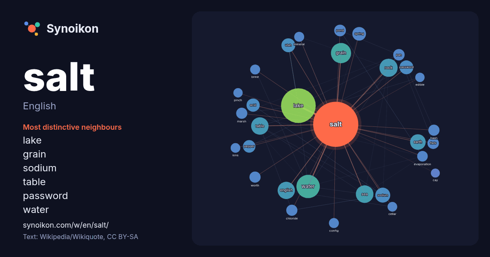

English · word of the day list
salt
The words found around it in 1972 instances from English Wikipedia, Wikiquote and Hacker News.

Most distinctive neighbours
- lake 67×
- grain 57×
- sodium 34×
- table 31×
- password 31×
- water 26×
- utah 26×
- earth 25×
- pepper 24×
- rock 21×
- sea 21×
- acid 21×
- hash 21×
- chloride 20×
- pond 19×
- evaporation 19×
- marsh 18×
- pan 18×
- config 17×
- brine 17×
× = how many times more often than in general English Wikipedia text.
Most frequent neighbours
- lake 194
- city 101
- water 88
- grain 66
- rock 53
- sea 50
- table 49
- english 48
- earth 39
- sodium 36
- british 34
- river 32
- born 31
- password 31
- utah 31
- spring 30
- acid 28
- island 28
- pepper 25
- food 24
In context
- more formally called table salt. In the form of a natural crystalline mineral, salt is also known as rock salt or halite. Salt is essential for life in Wikipedia snippets · Salt
- two rounds of talks and agreements: SALT I and SALT II. Negotiations commenced in Helsinki, in November 1969. SALT I led to the Anti-Ballistic Missile Wikipedia snippets · Strategic Arms Limitation Talks
- Salt Lake City, often shortened to Salt Lake or SLC, is the capital and most populous city of the U.S. state of Utah. It is the county seat of Salt Lake Wikipedia snippets · Salt Lake City
- Salt is a dietary mineral, used for flavoring and preservation. Salt or salts may also refer Wikipedia snippets · Salt (disambiguation)
- As-Salt (Arabic: السلط As-Salt), also known as Salt, is an ancient trading city and administrative centre in west-central Jordan. It is on the old main Wikipedia snippets · As-Salt
- In chemistry, a salt or ionic compound is a chemical compound consisting of an assembly of positively charged ions (cations) and negatively charged ions Wikipedia snippets · Salt (chemistry)
- Kosher salt or kitchen salt (also called cooking salt, rock salt, kashering salt, or koshering salt) is coarse edible salt usually without common additives Wikipedia snippets · Kosher salt
- A salt lake is a lake containing a high concentration of salt. Salt Lake may also refer to: Salt pan (geology), desert feature, a dry lake that may become Wikipedia snippets · Salt Lake
More English words
- art
- autumn
- bell
- bread
- bridge
- cat
- city
- climate
- clock
- death
- desert
- dog
- family
- food
- forest
- garden
- god
- gold
- health
- heart
- history
- honey
- horse
- island
- language
- life
- map
- mirror
- money
- mother
- mountain
- nature
- power
- rain
- road
- science
- shadow
- silence
- song
- star
- storm
- summer
- tea
- time
- train
- truth
- water
- winter
- work
Precomputed on 2026-10-09 with default settings (±5 words, medium corpus). The interactive map can refresh it with live data.